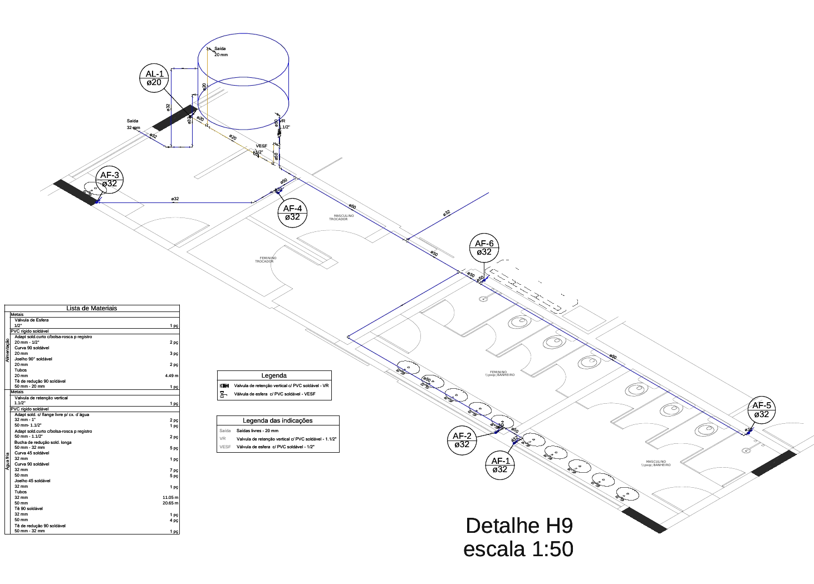
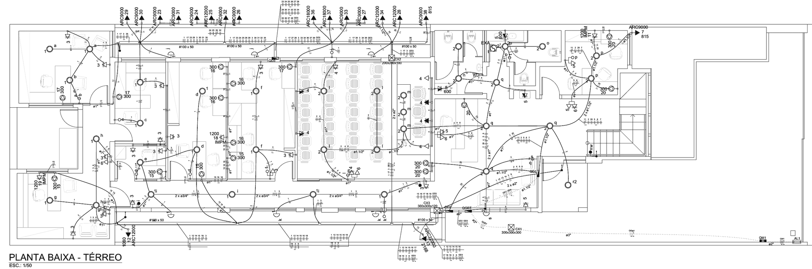
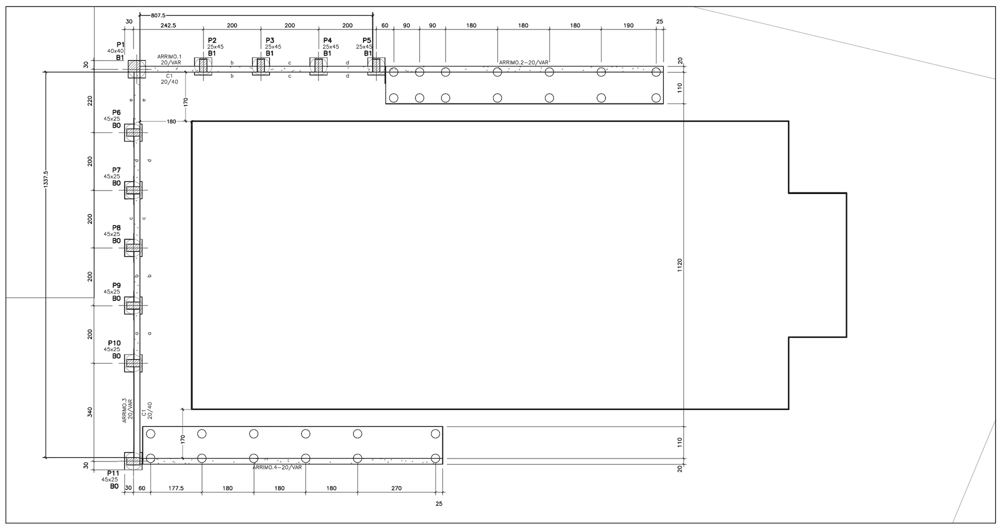
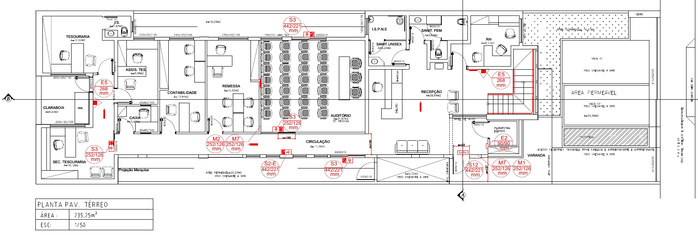
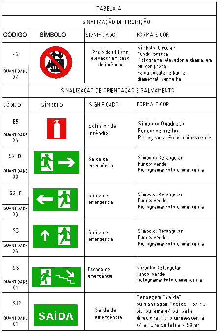

00 · PROLOGUE · MOVE THE MOUSE TO LOOK AROUND
Software engineer, former civil engineer, photographer, reader of history. Layers that look unrelated until you see how they hold each other up.
01 · THE CALL · 2011
Seventeen, three paths on the table, and the feeling that this one decision picks the rest of your life. Go ahead, pick one.
[CONFIRM THE THREE REAL OPTIONS YOU HAD IN 2011]
02 · STRUCTURES · 2012 TO 2020
Of everything in civil engineering, design was what I loved. Structural, hydraulic, electrical: hours over a drawing went by without my noticing. That was flow, and it was the first hint of what I wanted to do.
I was detailed and methodical with every sheet. I asked how the building would really be used, tried to see the problems before the site did, turned requirements and codes into decisions on paper, and drew so the people building it would understand it at a glance.
THE PRINT WAS WHITE. THE EDITOR NEVER WAS. KEEP SCROLLING ↓
STRUCTURAL · COLUMN LAYOUT
Get the grid right and everything else has somewhere to stand. Architecture before features.

HYDRAULIC · ISOMETRIC DETAIL H9
A plan shows the parts. An isometric shows the flow. I still diagram data the same way.

ELECTRICAL · LOAD TABLES
Every circuit sized for real use, with margin. My first capacity planning.

FOUNDATIONS · PILES AND CAPS
The part nobody sees carries everything. Same with tests.
That is where it started: the flow of a well-made design, the obsession with detail, solving problems before they reach the site, and drawing for whoever builds next. All of it came with me to software. So did dark mode.
INVESTIGATE BEFORE YOU DESIGN
On small church projects, a soil investigation looks like an expense that can be skipped. I negotiated with my manager and with church leaders, again and again, until boreholes were part of the budget.
It paid off. On one church, two boreholes a few meters apart told different stories: one hit a weaker layer around 7 m that the other never saw. Discovery before design, then and now.
■ WEAKER LAYER IN SP1, NOT VISIBLE IN SP2
SAFETY AND COMPLIANCE
Every design followed the Brazilian ABNT standards and, where required, the fire department's technical rules. For an office building I wrote the fire safety plan: occupancy per room, units of passage, exit widths, extinguishers, emergency lighting and signage.
The auditorium door got a sign saying 35 people maximum, because that is exactly what the math allowed. Today the codes are payment rules and accessibility guidelines. Same habit.

FIRE SAFETY · GROUND FLOOR
Extinguishers, emergency lighting and exit signs, placed by rule and by walking the routes.

SIGNAGE TABLE
The UI of a building in an emergency.
AUTOMATE THE BORING PARTS
Spreadsheets like the one above ran the repetitive math for me: occupancy, egress, loads, quantities. My time went to decisions, not arithmetic.
I also researched and set up the tools the department used to track and visualize every project. That is where I first met agile and kanban, years before writing a line of production code.
[SCREENSHOT OF THE REAL BOARD OR TOOL]
CIVIL ENGINEERING, UNASP · CHURCHES AND SCHOOLS · STRUCTURAL, HYDRAULIC, ELECTRICAL, FIRE SAFETY · ABNT STANDARDS · AUTOCAD · SPREADSHEETS · KANBAN
03 · THE DESERT · 2019 TO 2020
I was good at the work, and I still loved designing.
But I kept feeling that I could do more. That what I was best at and what I did all day were drifting apart, and the part I loved was getting smaller.
Deserts are quiet. That is where you start hearing the question you have been avoiding.
04 · THE CLICK · 2020
{{ py.text }}
{{ py.gloss }}
05 · THE THRESHOLD · 2020
2020 was the year everything stopped, and the year I started. Nights with Harvard's CS50, then the test that would let me into a full stack program.
JUNE 2020 · CS50 PROBLEM SET 0
Made in Scratch, in the middle of a pandemic. Click the viruses, spare the good cells, three lives. This is a quick remake so you can play it right here.
Play the original on Scratch ↗JULY 2020 · THE ADMISSION TEST
Build a page that adds two numbers. It sounds ridiculous now. It was genuinely hard for me then.
And when it finally worked, I did not stop. I added an icon, a card, a shadow, a reset button. Nobody asked for them. That instinct to go one step past the requirement never left.
This is the exact page I submitted, working. Typo included.
<!doctype html>
<html>
<head>
<title>Desafio - Calculadora</title>
<meta charset="utf-8" />
<link rel="shortcut icon" href="icon.png">
<style>
body {
font-family: "Times New Roman", Times, serif;
background-color: #FFFFFF
}
#warp{
width: 960px;
margin: auto;
padding: 10px 20px;
}
#content{
width: 420px;
padding: 10px 20px 10px 10px;
margin-top: 30px;
background: #CCCCCC;
box-shadow: 5px 10px 18px #888888;
}
h1{
margin: 0;
font-size: 40px;
}
h2{
margin: 0
}
p.sub{
margin-top: 0;
}
p.form{
text-align: center;
}
</style>
<script type="text/javascript">
function Calculadora() {
var n1=document.getElementById("n1").value
var n2=document.getElementById("n2").value
total = Number(n1) + Number(n2)
document.getElementById("resultado").value = total;
}
function Zerar() {
document.getElementById("n1").value = 0;
document.getElementById("n2").value = 0;
document.getElementById('resultado').value = 0;
Calculadora()
}
</script>
</head>
<body>
<div id="warp">
<header>
<a href="desafio-calculadora.html">
<img src="icon.png" align="left" width="70">
</a>
<h1>Calculadora Básica</h1>
<p class="sub">Use a calculadora abaixo para <strong>somar</strong> dois valores. </p>
</header>
<div id="content">
<article>
<p class="form">Primeiro valor: <input id="n1" type="number" name="A" value="" title="Digite o primeiro número aqui" autofocus></p>
<p class="form">Segundo valor: <input id="n2" type="number" name="B" value="0" title="Digite o segundo número aqui"></p>
<p class="form">Resultado:   <input id="resultado" value="0" title="Resultado" readonly></p>
<p class="form"><button type="button" title="Pressione para somar" onclick="Calculadora()">Somar</button><button type="button" title="Pressione para zerar" onclick="Zerar()">Zerar</button></p>
</article>
</div>
</div>
<body>
</html>
<!-- Coded by Elias Matheus Melo de Oliveira-->
Yes, the page closes with <body> instead of </body>. The browser forgave me. I kept it.
06 · INTERFACES · 2020 TO NOW
Frontend first, full stack when the problem asks for it. Today I work on payments at Dental Intelligence, where a bug is someone's money.
ANGULAR · TYPESCRIPT · RXJS · NGRX · SIGNALS · REACT · NEXT.JS · LARAVEL · JEST · CYPRESS · PLAYWRIGHT
07 · WORK · SELECTED
08 · METHOD · HOW I WORK
09 · LIGHT · FUJIFILM X-T3
Photography taught me to wait for the light and cut what does not belong in the frame. This whole page is a photograph: the dials in the corner set its exposure and film, the way they would on my camera.
[YOUR PHOTOS] · [PLACE] · [YEAR] · SHOT ON {{ fx.exif }}
10 · WORLDS · STRATEGY AND SCIENCE FICTION
Long strategy games are trade-off machines: grow the economy now or defend later, scout before you commit, and accept that the plan only lasts until first contact. Not so different from a roadmap.
[FAVORITE GAMES]Books and films that take one idea and follow it all the way. Good science fiction is a design review of the future, and building with AI today feels a lot like living inside one.
[FAVORITE BOOKS] · [FAVORITE FILMS]MY TECH TREE SO FAR
11 · TIME · THE LONG VIEW
Frameworks change every year. People mostly do not. History, philosophy and theology remind me that the hard problems are rarely the technical ones, and that most new questions are old questions in new clothes.
On Saturdays the laptop stays closed. I study, write and preach at my local church, and keep a small series of family Bible studies.
12 · EPILOGUE
The engineer checks the load. The photographer waits for the light. The strategist scouts before committing. The reader asks what came before. Together they ship better software.
{{ ix.kicker }}
Lighting conditions are changing. The sun is going down. Turn the dials on the camera.
-3 · EV · +3{{ fx.evLabel }}